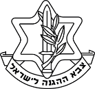

סתיו בר שי
בת 22 גרה ברעננה, סטודנטית לתואר ראשון בטכנולוגיות למידה ב- HIT
תעסוקה
השכלה

שירות צבאי
תחומי עניין
צור קשר
השכלה
12 שנות לימוד מלאות, כולל בגרות מלאה והרחבת כימיה 2 שנים.
2016-2017 : סטודנטית בפקולטה "טכנולוגיות מערכות למידה" במכון הטכנולוגי בחולון HIT.